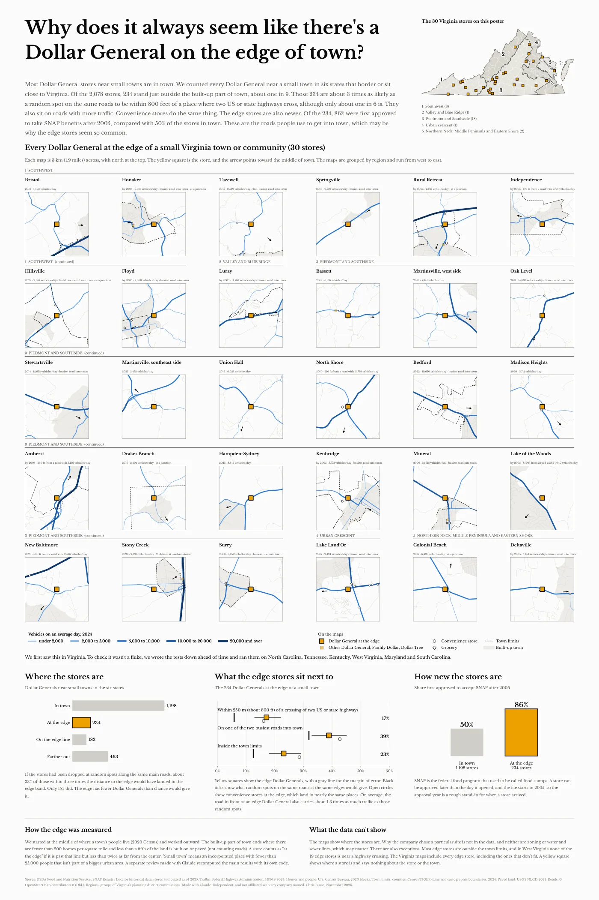
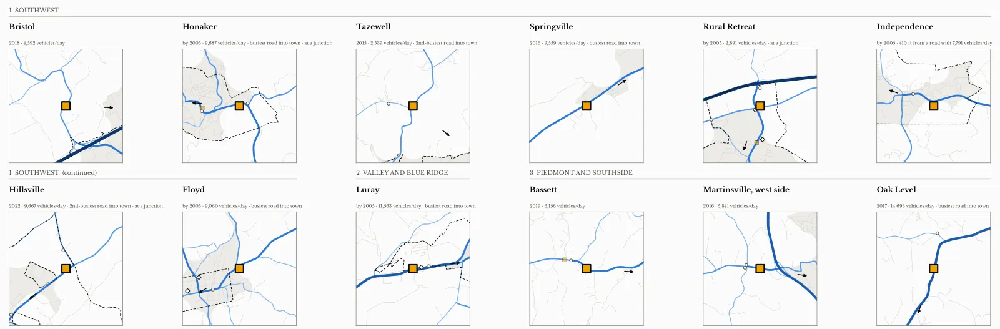
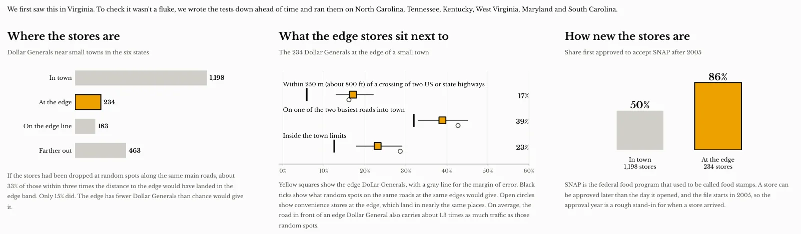

Why does it always seem like there's a Dollar General on the edge of town?
Every Dollar General near a small town in six states, compared with random spots on the same roads, and every one at the edge of a small Virginia town on a map.
Read this as a PDF: phone edition, large-screen edition
Made with Claude for Chris Busse, November 23, 2026. The numbers were checked against their sources on November 22, 2026. This work is independent, and it is not affiliated with any company named on this page.
Most Dollar General stores near small towns are in town. We counted every Dollar General near a small town in six states that border or sit close to Virginia. Of the 2,078 stores, 234 stand just outside the built-up part of town, about one in 9. Those 234 tend to be on the busier roads coming in, and they are about 3 times as likely as a random roadside spot at the same edge to be within 800 feet of a spot where two US or state highways cross. Convenience stores do the same thing. The edge stores are also newer. These are the roads people use to get into town, which may be why the edge stores seem so common.
Chris Busse asked the question. This page explains how we checked it, what we found, and what the data can't say. The poster below shows the results, and How we know covers the method.

Fig. 1. The poster, 24 by 36 inches. Every number on it is computed from the test results; none is typed in. How this was made: drawn in code with Claude from public data, listed under Sources.
How many stores are at the edge
To say a store is "at the edge," we need a line for where a town stops. We started at the middle of where a town's people live and worked outward, block by block, using 2020 Census counts of homes and the U.S. Geological Survey's map of paved and built-on land. The built-up part of town ends where there are fewer than 200 homes per square mile and less than a fifth of the land is built on or paved (not counting roads). A store is "at the edge" if it is past that line but less than twice as far from the center as the line is.
We first saw the pattern in Virginia. To check it wasn't a fluke, we wrote the tests down ahead of time and then ran them on six other states: North Carolina, Tennessee, Kentucky, West Virginia, Maryland and South Carolina. In those states there are 2,078 Dollar Generals near small towns (incorporated places with fewer than 25,000 people that aren't part of a bigger urban area). 1,198 are in town, 234 are at the edge, 183 sit right on the edge line, and 463 are farther out.
If the stores had been dropped at random spots along the same main roads, about 33% of those within three times the distance to the edge would have landed in the edge band. Only 15% did. So the edge has fewer Dollar Generals than chance would give it. The impression that they are always at the edge does not come from their numbers.
The Virginia maps

Fig. 2. The first two rows of the poster's grid. Each map is 3 km (1.9 miles) across, with north at the top. The yellow square is the store, and the arrow points toward the middle of town. Roads are colored by how many vehicles use them on an average day in 2024 [FHWA HPMS]. Under each name: the year the store was first approved for SNAP, the traffic on its road, and whether it is on one of the two busiest roads into town or at a junction.
The poster maps every Dollar General at the edge of a small Virginia town or community, 30 stores in all, with none left out. They are grouped into five regions made from Virginia's planning districts and run from west to east. Some fit the pattern well. Others sit on quiet roads with no junction nearby. Showing all of them, including the ones that don't fit, is the point of the grid.
What the edge stores sit next to

Fig. 3. The poster's charts, for the six states. In the middle chart, yellow squares are the edge Dollar Generals with a gray line for the margin of error, black ticks are random spots on the same roads at the same edges, and open circles are convenience stores at the edge.
We compared the 234 edge stores with random spots on the same main roads at the edge of the same towns, so every store is measured against its own town.
- Highway crossings. 17% of the edge stores are within 250 m (about 800 feet) of a spot where two US or state highways cross. The random spots give 6%. That is the clearest difference we found, and it held up under every check we ran on the six states. Convenience stores at the edge come in at 16%.
- The busiest roads in. 39% are on one of the two busiest roads into town, against 32% for the random spots (43% for convenience stores). This held up in most of our checks but not all of them.
- Traffic. On average, the road in front of an edge Dollar General carries about 1.3 times as much traffic as the random spots.
- Town limits. 23% of the edge stores are inside the town limits, against 13% for the random spots, so they lean toward the inside. Still, most of them (77%) are outside the limits. In Virginia most edge stores were just inside the town line, so this part of the picture changes from state to state.
Convenience stores land in nearly the same places. Whatever puts a Dollar General near a highway crossing seems to put a convenience store there too. The pattern isn't the same everywhere, though. In West Virginia, none of the 19 edge stores is near a highway crossing.
How new the stores are
86% of the edge stores were first approved to take SNAP benefits after 2005, compared with 50% of the stores in town. SNAP is the federal food program that used to be called food stamps, and USDA publishes every approved store with the date it was approved [USDA SNAP Retailer Locator]. An approval date can come later than an opening date. Around the 2009 stimulus, the number of stores taking SNAP rose 67% from 2007 to 2012, and most of the new ones were stores other than grocers, such as dollar, drug and convenience stores [Byrne and others 2025]. In our data, Dollar General's approval years show no large jump in 2009, and the edge stores cluster in 2016 and later, so the approval year works as a rough stand-in for when a store arrived. The file starts in 2005.
Does SNAP explain it?
We checked two ways, writing each test down before running it.
Inside a town. Using the Census's 2020–2024 estimates, we measured the share of households within 3 km that received SNAP in the past year [ACS B22010]. Around the edge Dollar Generals it is 16.4%. Around random spots on the same roads at the same edges it is 16.4%. The difference is within 0.7 percentage points either way, which is too small to matter. In town it is the same (18.9% against 18.8%). Where a store sits inside a town does not follow where SNAP households live.
Across towns. In 1,460 small towns, towns where more households get SNAP do have more Dollar Generals for their size: about 1.13 times as many per household for every 10 more percentage points of SNAP households (1.10 to 1.17), comparing towns of the same size in the same state. But they also have more grocery stores (1.17 times) and convenience stores (1.21 times). In the third of towns with the fewest SNAP households there are 0.74 Dollar Generals and 0.78 grocery stores per 1,000 households. In the third with the most, there are 1.20 and 1.21. Towns where more families use SNAP have more food stores of every kind for their size. That doesn't explain the edge.
We could not measure how much SNAP money any one store takes in. USDA does not release store-level redemption data. A South Dakota newspaper asked for it in 2011 and won in the lower courts, but in 2018 Congress changed the law to bar its release [Pomeranz 2019], and in 2019 the Supreme Court held that the data is confidential [FMI v. Argus Leader].
What the data can't show
The maps show where the stores are. Why the company chose a particular site is not in the data. Zoning and water and sewer lines may matter, and neither is in the data. Dollar General says about 80% of its stores serve communities of 20,000 or fewer people [Dollar General], which fits a chain built around small towns but doesn't say where in a town it builds. A yellow square shows where a store is and says nothing about the store or the town.
Other researchers have studied what happens after a dollar store opens. They found that independent grocery stores are more likely to close, and more so in rural areas [Caoui, Hollenbeck and Osborne; USDA ERS 2024]. Those studies use private store data we don't have, and this page takes no position on them.
How we know
- Stores. Every store from USDA's SNAP Retailer Locator historical file (2005–2025), with duplicates of the same store removed. A store that doesn't take SNAP is missing. We did not use any company's store locator.
- The edge. Built from 2020 Census blocks (homes per square mile) and the 2021 National Land Cover Database (built-on and paved land, roads left out). Gaps of up to about 800 m between built-up pieces are filled in. A store within 30 m of the edge line is counted as "on the edge line" and left out of the tests. When a store is near two towns, it counts once, for the town it is closest to by this measure.
- Random spots. Points on trunk, primary, secondary and tertiary roads from OpenStreetMap, in each town's own edge band, drawn with a fixed seed so the run can be repeated.
- Traffic and junctions. Annual average daily traffic from the Federal Highway Administration's 2024 Highway Performance Monitoring System. A junction is a spot where two US or state highways meet.
- Testing. The tests and what would count as a result were written down before any data from the six states was opened. Each result is the average difference between a store and its own town's random spots, with a margin of error from resampling whole towns 10,000 times. A separate review, also run with Claude, read the plan before the run and afterward recomputed the main test results with its own code. It found a mistake in one exploratory number, which was corrected and is not used here.
- The record. Every step, including dead ends, is kept in the project's case study
(
drafts/dollar-stores-virginia/casestudy/). The scripts are intools/stories/dollar-stores/:measure.py(the edge),confirm.py(the tests),snap_test.pyandsnap_towns.py(SNAP),poster.py(the poster) andcounts.py(this page's numbers).
Sources
- USDA SNAP Retailer Locator historical data, 2005–2025. USDA Food and Nutrition Service. https://www.fns.usda.gov/sites/default/files/resource-files/snap-retailer-locator-data2005-2025.zip. Public domain.
- FHWA HPMS: Highway Performance Monitoring System, 2024 spatial data, all sections. Federal Highway Administration, via https://data.transportation.gov/. Public domain.
- Census 2020 blocks (homes and people), TIGER/Line places 2024, cartographic boundaries 2024. U.S. Census Bureau. Public domain.
- ACS B22010: American Community Survey 2020–2024 5-year estimates, table B22010, receipt of food stamps/SNAP. U.S. Census Bureau. Public domain.
- NLCD 2021 impervious surface and descriptor. U.S. Geological Survey and MRLC. Public domain.
- OpenStreetMap roads, © OpenStreetMap contributors, ODbL.
- Virginia planning districts: Virginia Association of Planning District Commissions, https://www.vapdc.org/pdc-directory.
- Byrne and others 2025: Anne T. Byrne, Xiao Dong, Jessie Handbury, Erik James, Katherine Meckel and Andrés Rovira, "SNAP chain expansion" working paper, November 20, 2025, https://realestate.wharton.upenn.edu/wp-content/uploads/2025/12/SNAP_chain_expansion_CurrentPublic.pdf.
- Pomeranz 2019: Jennifer L. Pomeranz, "Supplemental Nutrition Assistance Program Data: Why Disclosure Is Needed," American Journal of Public Health 109(12), 2019, https://pmc.ncbi.nlm.nih.gov/articles/PMC6836781.
- FMI v. Argus Leader: Food Marketing Institute v. Argus Leader Media, No. 18-481 (U.S. June 24, 2019).
- Dollar General: "Here for What Matters: How DG Chooses Store Locations," company news release, https://newscenter.dollargeneral.com/news/here-for-what-matters-how-dg-chooses-store-locations/3fcd5a78-37f6-43da-95f5-8e12ad8f8749.
- Caoui, Hollenbeck and Osborne: "The Impact of Dollar Store Expansion on Local Market Structure and Food Access," July 31, 2025 version, https://www.anderson.ucla.edu/sites/default/files/document/2025-08/caoui_hollenbeck_osborne_dollarstores_foodaccess%20(1).pdf.
- USDA ERS 2024: Keenan Marchesi, Sandro Steinbach and Rigoberto A. Lopez, "Dollar Store Entry Affects Rural Grocery Stores More Than Urban," Amber Waves, May 6, 2024, https://www.ers.usda.gov/amber-waves/2024/may/dollar-store-entry-affects-rural-grocery-stores-more-than-urban.
How this page was made
Chris Busse asked the question and directed the work. The research, the tests, the poster and
this page were made in code with Claude, and every number on the page is filled in from the
results files by tools/stories/dollar-stores/page.py. See the
artist statement for how Chris works with isoscape and Claude.
Read this as a PDF: phone edition, large-screen edition